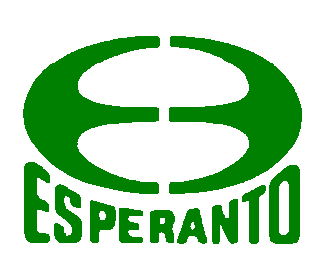

Vad är esperanto?
Det är ett fullvärdigt språk för mänsklig
kommunikation. Det är ett konstruerat språk, med rötter i europeiska språk,
speciellt latin och grekiska.
Varför esperanto?
Vad skall vi ha esperanto till i dag,
när engelska användes överallt, och när esperanto under loppet av
över 100 år inte klarat av att bli ett standardspråk för internationella
sammankomster.
Vi som lärt oss esperanto tycker i alla fall
inte att vi har kastat bort tiden, antingen vårt intresse är baserat på
nytta, idealism eller ren hobbyverksamhet. En del ivrar för de ideal som
Ludwig Zamenhof, skaparen av språket, hade om ett äkta internationellt språk
som medel för vetenskapligt utbyte och förståelse över
nationsgränserna. Men det finns väldigt många som bara utnyttjar
esperanto som en utvecklande och glädjebringade hobby.
Här är några fördelar med att kunna och
använda esperanto:
- Det
är ett trevligt språk, som lär dig leka med ord och uttryck. Det stimulerar
hjärnan och språkförståelsen!
- Det
är lätt (relativt sett) att lära. Det kräver samma studieinsats som andra
språk, men du kommer mycket längre på samma tid!
- Tröskeln, för att komma igång med att använda språket
praktiskt, är låg, eftersom mycket av ordförrådet baseras på latin. D.v.s.
många ord påminner mycket om de ord vi använder i svenskan, t.ex.
”telefono”,
”inteligenta”,
”radio” med flera.
- Baskunskap i esperanto är ett bra komplement när man skall läsa
andra främmande språk, både europeiska och språk som används i andra
världsdelar.
- I
jämförelse med andra språk uppnår man snabbt sådana färdigheter att
man kan föra meningsfulla samtal med andra esperantister, antingen genom
brevväxling eller genom personliga kontakter.
- Nästan alla som lärt sig esperanto deltar i något nätverke,
där det enda gemensamma är att deltagarna kan esperanto och att de önskar
komma i kontakt med eller bli kontaktade av människor från hela
världen.
- Många av dem som är med i dessa nätverk tar också emot resande
esperantister, inte bara för att få nya spännande bekantskaper, utan de
upplåter även plats för gratis övernattning. Med hjälp av
“Pasporta Servo” (pass-tjänsten) kan du resa världen
runt och få kontakt med folk och kulturer på ett helt annat sätt
än t.ex. en vanlig ”ryggsäcks” turist kan få.
- Skulle du inte ha tillfälle att resa, det gäller många, kan du
likväl glädja dig över esperanto i ditt hem genom böcker, tidningar,
radioutsändningar och inte minst via INTERNET.
- Esperantister är ofta människor som, utöver språket, är
intresserade av ekologi, naturskydd, internationella frågor, vänskap och
förståelse mellan olika kulturer, ickevåld, avmilitarisering etc. Men, kom
ihåg vi lever i en ”fri värld” och allt kan uttryckas med hjälp av
esperanto, så det är bara att sätta igång! ;-)
Esperanto på nätet:
Svenska Esperantoförbundet (S E
F):
www.esperanto.se
Världsesperantoförbundet (U E
A):
www.uea.org
Information om Esperanto på många
språk:
www.esperanto.net
Här en sida där man kan
hitta flera fora där man använder esperanto
www.
egrou
ps.co
m